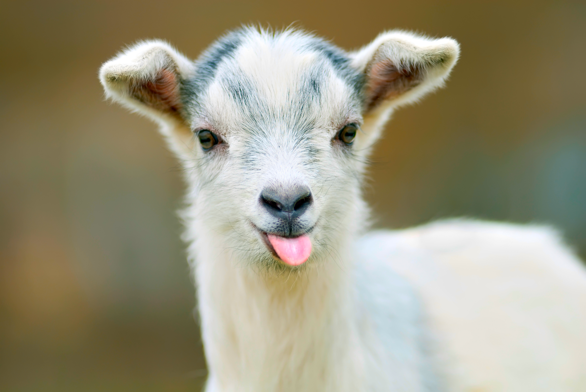

La chèvre est un animal d'assez petite taille, à cornes arquées ou sans corne (« motte », polled pour les anglo-saxons9), très agile, particulièrement adapté au saut. Sa température interne normale est assez élevée (de 38 à 39,5 °C). On la trouve dans toutes les régions du globe, particulièrement en montagne. Les mâles sont appelés boucs et les petits sont des chevreaux ou chevrettes (parfois encore appelés cabris). Les chèvres présentent généralement une barbe au menton ainsi que des excroissances de peau au niveau du cou appelées pampilles ou pendeloques. La fonction des pampilles n'est pas connue. Ce sont des morceaux de cartilage creux, recouverts de poils. Les chèvres ont toutes 60 chromosomes par cellule. La chèvre mesure entre 80 et 100 cm, et pèse, selon ses origines, entre 15 et 80 kg. Elle vit en moyenne 14 ans.
La chèvre est un animal relativement intelligent, s'attachant volontiers au soigneur. C'est une grimpeuse adaptée aux escarpements rocheux, aux murailles ou aux arbres si leur feuillage est convoité ; poussée par son instinct d'exploratrice, elle se retrouve parfois dans des positions délicates. Les chèvres raffolent de l'herbe à la puce, de l'armoise tridentée, de l'euphorbe ésule et du kudzu. Voilà pourquoi elles sont les stars du désherbage sélectif. On a recours à ces brouteuses pour éliminer les végétaux indésirables, telles les espèces envahissantes et les broussailles alimentant les feux de forêt. Cette pratique est populaire en Amérique du Nord et en Australie.On utilise à la fois des moutons et des chèvres, mais ces dernières sont plus appréciées en raison de leurs goûts éclectiques, de leur bon équilibre sur un terrain pentu et de leur capacité à brouter plus haut, en appui sur leurs pattes arrière. Les chèvres - dont un troupeau de cent têtes peut se louer 150 euros la journée - arrachent aussi les feuilles avec précision. De nombreux clients tels que les parcs, les ranchs et ou encore des particuliers font appel à leurs services.